Figure 1: Crie sua Obra-Prima!
{ggplot2} é um sistema para a criação declarativa de gráficos, baseado na Gramática dos Gráficos–um esquema geral para visualização de dados que divide os gráficos em componentes semânticos, como escalas e camadas. Você fornece os dados, diz ao {ggplot2} como mapear as variáveis para as estéticas, quais primitivos gráficos usar e ele cuida dos detalhes.
Um livro muito bom sobre visualização de dados é o “Fundamentals of Data Visualizations” de Claus Wilke (Figura 2). Um segredinho, ele foi todo feito em Rmarkdown e ggplot2 #ficaadica.

Figure 2: Fundamentals of Data Visualization
Como usar?
Cada gráfico {ggplot2} tem três componentes principais:
- dados (data),
- Um conjunto de mapeamentos estéticos (aesthetics)
aes()entre variáveis nos dados e propriedades visuais, e - Pelo menos uma camada (layer) que descreve como renderizar cada observação. As camadas geralmente são criadas com uma função
geom_*.
library(ggplot2) # `require(ggplot2)` também serve 99.99% usam `library()`
library(dplyr)
mpg %>% # igual a isso `ggplot(data = mpg)`
ggplot()
mpg %>%
ggplot(aes(hwy, cty)) +
geom_point() +
geom_smooth(method = "lm")OBS: Porque
+e não o pipe%>%? Lembra que eu falei que{ggplot2}veio antes do{tidyverse}e antes do Hadley trabalhar totalmente com opensource na RStudio? Então osgeom_*()vieram antes do pipe%>%. Por isso a API adiciona camadas. Então usamos o+.
Pergunta: Quero interatividade?! E agora? Resposta: Não tema! Use o
{plotly}e seja feliz!
library(plotly)
p <- mpg %>%
ggplot(aes(hwy, cty)) +
geom_point() +
geom_smooth(method = "lm")
ggplotly(p)Geom
Temos vários! VÁRIOS! Vou mostrar alguns mais comuns:
geom_point(): gráficos de dispersão.
mpg %>%
ggplot(aes(cyl)) +
geom_point(aes(y = hwy), shape = 3, color = "steelblue") +
geom_point(aes(y = cty), shape = 1, color = "red")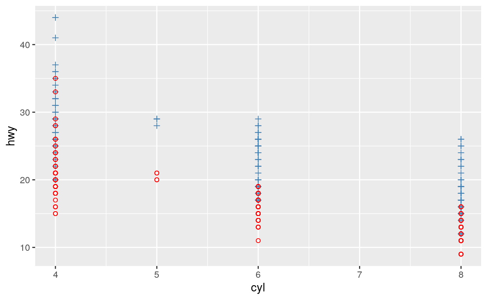
geom_smooth(): ajusta uma linha de tendêndia (suavizada ou linear) aos dados e a exibe junto com o seu erro padrão. Muitas vezes usado em conjunto com ogeom_point().
ggplot(mpg, aes(displ, hwy, colour = class)) +
geom_point() +
geom_smooth(method = "lm")geom_boxplot(): diagrama de caixa, o queridinho dos estatísticos (idealizado por John Tukey).
mpg %>%
ggplot(aes(class, hwy, colour = class)) +
geom_boxplot()geom_histogram()egeom_density(): distribuição de variáveis contínuas, intervalares ou ordinais.
mpg %>%
ggplot(aes(hwy)) +
geom_histogram(bins = 30)mpg %>%
ggplot(aes(hwy)) +
geom_density(fill = "steelblue")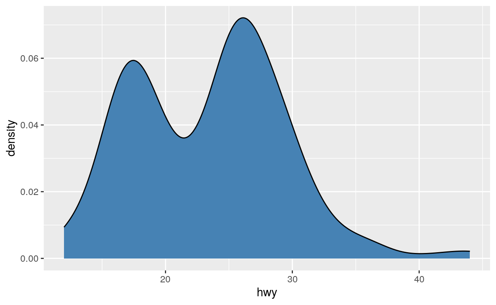
geom_bar(): distribuição de variáveis discretas, qualitativas, categóricas ou nominais.geom_bar()por padrão conta a frequência das ocorrências mas você pode usar qualquer outra maneira de contagem com ogeom_col().
geom_line(): desenha linhas entre as observacões. Muito “abusado”. Tentem usar apenas para séries temporais #ficaadica.
Estéticas com aes()
Além de x e y temos outros atributos como:
colour: cores (cuidado pois as vezes pessoas confundem comfill)
mpg %>%
ggplot(aes(cyl, hwy, colour = class)) +
geom_point()fill: preenchimento
shape: forma
mpg %>%
ggplot(aes(cyl, cty, shape = class)) +
geom_point()size: tamanho
mpg %>%
ggplot(aes(displ, hwy, colour = class, size = cyl)) +
geom_point()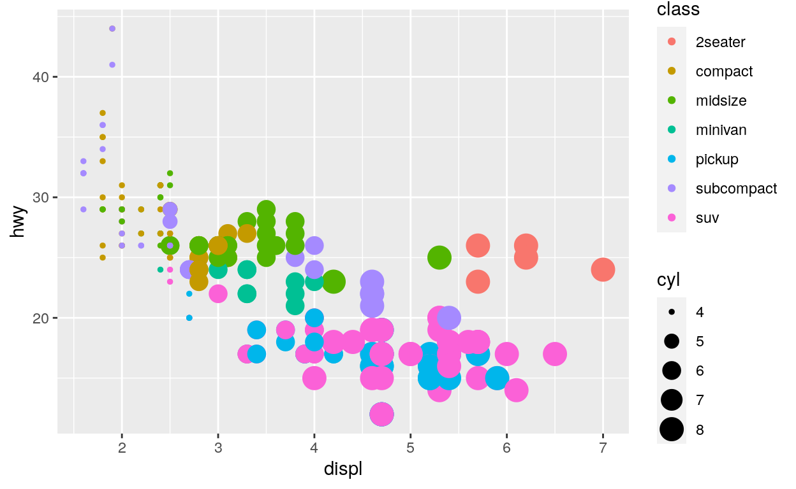
Atributos dentro e fora do aes()
Vejam abaixo o que vai acontecer!
mpg %>%
ggplot() +
geom_point(aes(displ, hwy, colour = "steelblue"))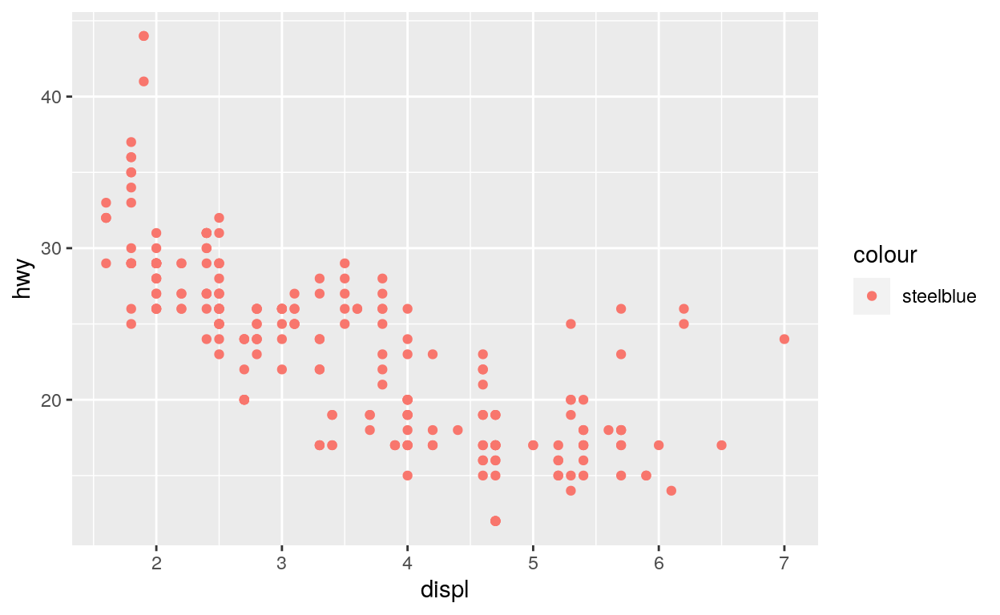
mpg %>%
ggplot() +
geom_point(aes(hwy, displ), color = "steelblue", size = 5)Rótulos com labs()
Teoricamente você precisa somente de ggplot(aes(... )) + geom_*(). Mas à vezes é legal customizar o gráfico com mais informações ou alterar alguma coisa.
{ggplot2} fornece a função auxiliar labs() para definir o nome para uma ou mais escalas, usando pares nome-valor como x = "eixo X" ou fill = "legenda do preenchimento". Além disso, você pode adicionar NULL para remover o rótulo:
title: títulosubtitle: subtítulox: eixo Xy: eixo Ycaption: “rubrica”
mpg %>%
ggplot(aes(displ, hwy, colour = class, size = cyl)) +
geom_point() +
labs(
title = "Um gráfico bonito",
subtitle = "... é aquele que tem subtítulos",
caption = " ... juntamente com \"rubricas\"",
x = "Deslocamento Volumétrico",
y = "Autonomia em Milhas por Galão",
colour = "Tipo de Carro",
size = "QTD Cilindros"
)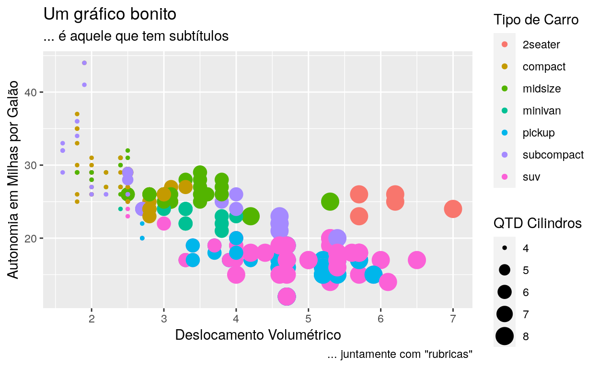
mpg %>%
ggplot(aes(displ, hwy, colour = class, size = cyl)) +
geom_point() +
labs(
title = NULL,
subtitle = NULL,
caption = NULL,
x = NULL,
y = NULL,
colour = NULL,
size = NULL
)Facetação com facet_wrap()
Outra técnica para exibir variáveis categóricas adicionais em um gráfico é a facetação. A facetação cria tabelas de gráficos dividindo os dados em subconjuntos e exibindo o mesmo gráfico para cada subconjunto.
Para facetar um gráfico, você simplesmente adiciona uma especificação de facetamento com facet_wrap(), que leva o nome de uma variável precedida por ~.
mpg %>%
ggplot(aes(displ, hwy, colour = class, size = cyl)) +
geom_point() +
facet_wrap(~class)facet_wrap() tem alguns argumentos interessentes:
nrowouncolscalescontrola os eixosxeylabellercontrola o “subtítulo” da “faceta”
mpg %>%
ggplot(aes(displ, hwy, colour = class, size = cyl)) +
geom_point() +
facet_wrap(~class,
ncol = 2, # mutuamente exclusivo de `nrow`
scales = "free", # cada faceta tem seu eixo x e y
labeller = "label_both" # traz o label da "facet" junto com o valor das classes da faceta
)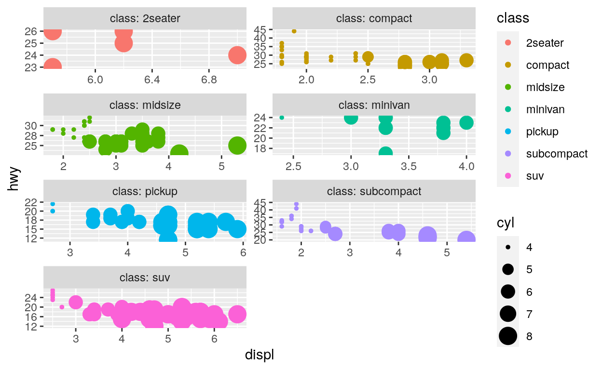
Você pode colocar mais facets. Quando você tem mais variáveis o labeller = "label_value" funciona muito bem.
mpg %>%
ggplot(aes(displ, hwy, colour = class, size = cyl)) +
geom_point() +
facet_wrap(~class + cyl,
labeller = "label_both")Customização de Temas com theme()
O sistema de temas é composto por quatro componentes principais:
- Os elementos do tema especificam os elementos que não são de dados que você pode controlar. Por exemplo, o elemento
plot.titlecontrola a aparência do título do gráfico;axis.ticks.x, os ticks no eixo x;legend.key.height, a altura das chaves na legenda.
mpg %>%
ggplot(aes(displ, hwy, colour = class, size = cyl)) +
geom_point() +
labs(title = "Algum título que eu vou querer em Comic Sans") +
facet_wrap(~class + cyl,
labeller = "label_both") +
theme(text = element_text(size = 8),
plot.title = element_text(family = "Comic Sans MS"),
axis.ticks.x = element_line(colour = "purple",
arrow = arrow(
length = unit(
1, "mm"))))Cada elemento está associado a uma função de elemento, que descreve as propriedades visuais do elemento. Por exemplo,
element_text ()define o tamanho da fonte, a cor e a face dos elementos de texto comoplot.title.A função
theme ()que permite substituir os elementos do tema padrão chamando funções de elemento, comotheme(plot.title = element_text (color = "red"))Temas completos, como
theme_grey(), para definir todos os elementos do tema para valores projetados para trabalhar de maneira harmônica.
mpg %>%
ggplot(aes(displ, hwy, colour = class, size = cyl)) +
geom_point() +
theme_classic() # gosto bastante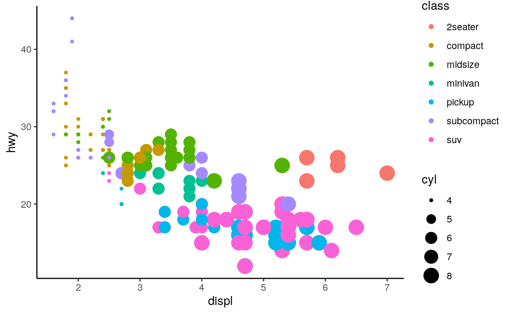
Escalas com o scale_*_*()
As escalas controlam os detalhes de como os valores dos dados são convertidos em propriedades visuais. Temos várias, veja a documentação. Mas vou destacar algumas que uso bastante:
scale_y_log10(): põe o eixoynuma escala logarítima (parece que isso tá na moda com o COVID).
economics %>%
ggplot(aes(date, unemploy)) +
geom_line() +
scale_y_log10()scale_fill_brewer()escale_colour_brewer(): usa as escalas de cores do Color Brewer 2.0.
mpg %>%
ggplot(aes(displ, hwy, colour = class)) +
geom_point(alpha = 0.5) +
scale_color_brewer(palette = "Set1")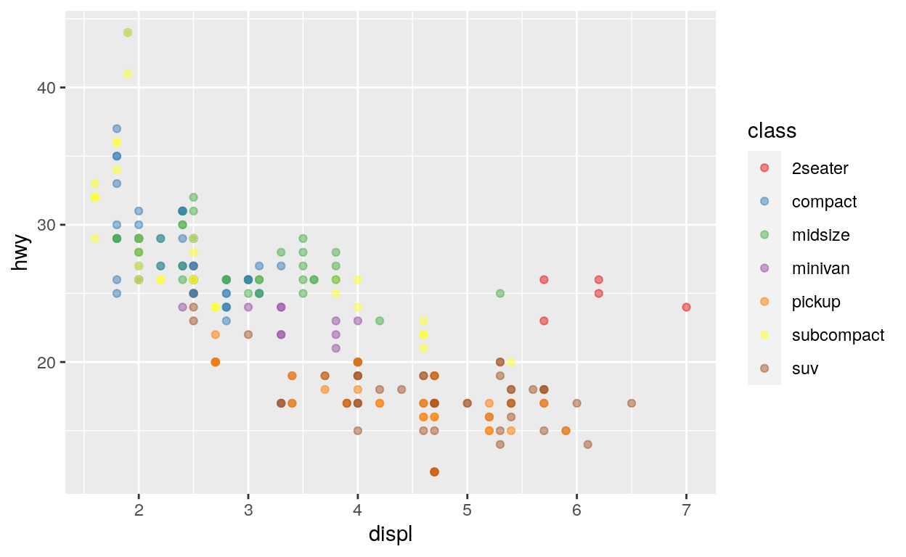
scale_fill_viridis_c()escale_colour_viridis_c(): usa as escalas de cores opensource doMatplotlib
mpg %>%
ggplot(aes(displ, hwy, colour = as.factor(cyl))) +
geom_point() +
scale_colour_viridis_d(option = "E") # cividis que é inclusivo de quem tem "dificuldades" de coresVamos arrumar o gráfico anterior:
mpg %>%
ggplot(aes(displ, hwy, colour = class, size = cyl)) +
geom_point(alpha = 0.5) +
scale_size(range = c(1, 3))Mais escalas com o {scales}
O pacote {scales} fornece a infraestrutura de escala interna usada pelo {ggplot2} e fornece ferramentas para substituir os valores padrões de breaks, labels, transformations etc.
label_percent(): converte os rótulos de um eixo para percentuais.
economics %>%
ggplot(aes(date, unemploy / pop)) +
geom_line() +
scale_y_continuous(labels = scales::label_percent(accuracy = 0.01, decimal.mark = ",")) +
labs(y = "% de Desempregados da Pop Total")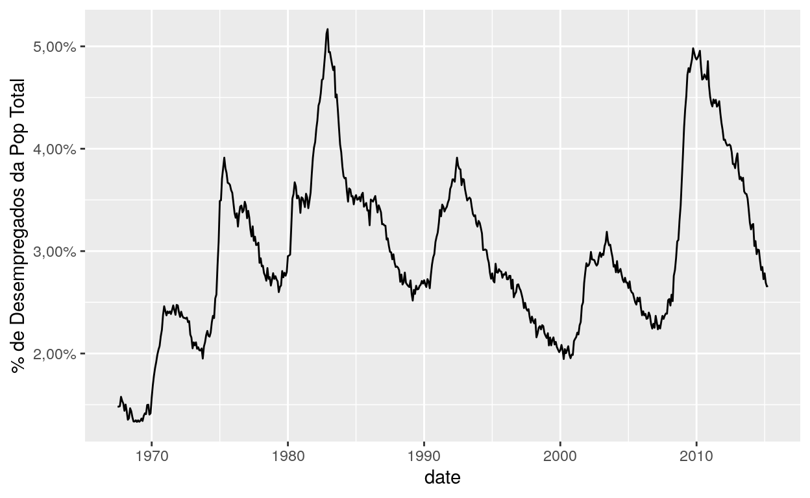
label_scientific(): converte os rótulos de um eixo para notação científica (1e05,1.5e-02etc.).label_dollar(): converte os rótulos de um eixo para valores de moeda (U$, R$ etc.)
economics %>%
ggplot(aes(date, pce)) +
geom_line() +
scale_y_continuous(
labels = scales::label_dollar(prefix = "R$ ",
suffix = " bi",
decimal.mark = ".")
)“Como é que salva?” ggsave()
Só usar o ggsave(dpi = 300)
Compor múltiplos gráficos com {patchwork}
O pacote {patchwork} tem como objetivo tornar ridiculamente simples combinar gráficos {ggplot2} em um mesmo gráfico.
É apenas usando operadores aritméticos e relacionais já conhecidos como se fosse uma álgebra de gráficos: (), +, /, | etc.
library(patchwork)
p1 <- ggplot(mtcars) + geom_point(aes(mpg, disp))
p2 <- ggplot(mtcars) + geom_boxplot(aes(gear, disp, group = gear))
p3 <- ggplot(mtcars) + geom_smooth(aes(disp, qsec))
p4 <- ggplot(mtcars) + geom_bar(aes(carb))
(p1 | p2 | p4) / p3 +
plot_annotation(title = "Quatro gráficos legais",
tag_levels = "I", tag_prefix = "Fig. ") +
plot_layout(nrow = 2, widths = c(1, 3),
heights = c(2, 1))Free Samples
Vocês já sabem tudo o que é necessário para fazerem visualizações perfeitas no {ggplot2}. Mas tem alguns outros pacotes que valhe a pena aprender.
{ggrepel}: geoms para{ggplot2}para repelir rótulos de texto sobrepostos.
library(ggrepel)
ggplot(mtcars, aes(wt, mpg, label = rownames(mtcars))) +
geom_label_repel() +
geom_point(color = 'red') +
theme_classic(base_size = 12)Dá para fazer uma gambiarra
library(stringr)
ggplot(mtcars, aes(wt, mpg, label = if_else(str_detect(rownames(mtcars), "Merc"), rownames(mtcars), NA_character_))) +
geom_text_repel() +
geom_point(color = 'red') +
theme_classic(base_size = 12)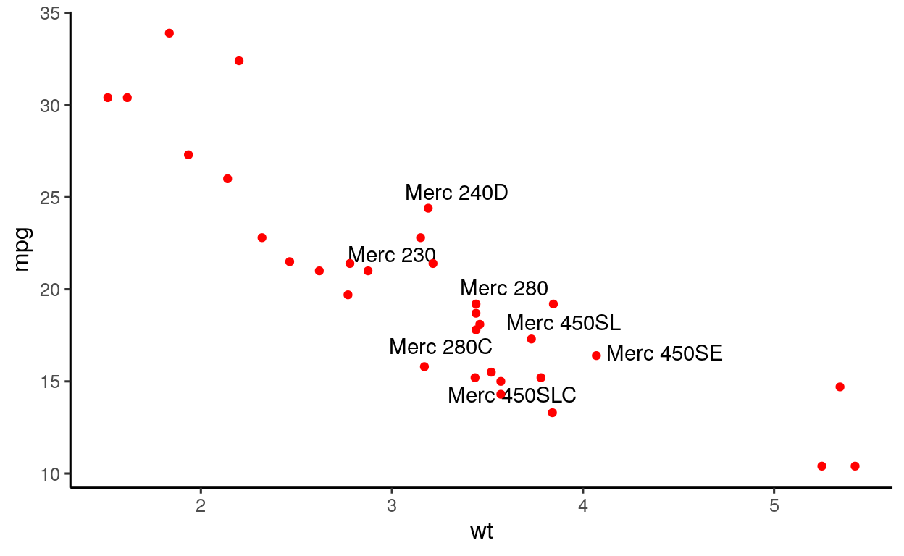
{gghighlight}: destacar geoms no{ggplot2}.
set.seed(2)
d <- purrr::map_dfr(
letters,
~ tibble::tibble(
idx = 1:400,
value = cumsum(runif(400, -1, 1)),
type = .,
flag = sample(c(TRUE, FALSE), size = 400, replace = TRUE)
)
)
d %>%
ggplot(aes(idx, value, colour = type)) +
geom_line()
Eu posso filtrar?
A solução é usar o {gghighlight}:
library(gghighlight)
d %>%
ggplot(aes(idx, value, colour = type)) +
geom_line() +
gghighlight(max(abs(value)) >= 20)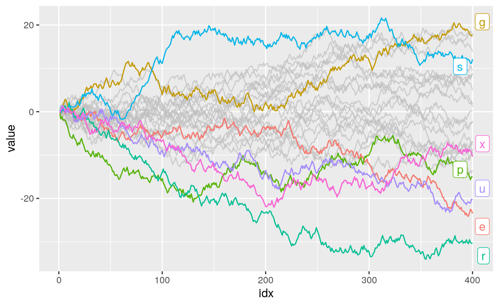
{ggExtra}: histogramas marginais em gráficos de dispersão.
library(ggExtra)
plot <- mpg %>%
ggplot(aes(hwy, cty)) +
geom_point(colour = "steelblue")
ggMarginal(plot){ggridges}: um dos meus preferidos! Gráficos de densidade múltiplos.
library(ggridges)
diamonds %>%
ggplot(aes(price, cut, fill = as.factor(cut))) +
geom_density_ridges() +
scale_x_continuous(labels = scales::label_dollar()) +
scale_fill_brewer(palette = "Set1")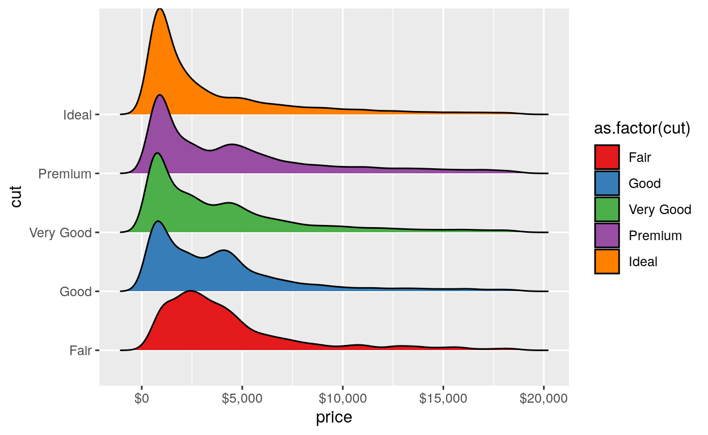
Ambiente
R version 4.2.2 (2022-10-31)
Platform: x86_64-pc-linux-gnu (64-bit)
Running under: Ubuntu 22.04.1 LTS
Matrix products: default
BLAS: /usr/lib/x86_64-linux-gnu/openblas-pthread/libblas.so.3
LAPACK: /usr/lib/x86_64-linux-gnu/openblas-pthread/libopenblasp-r0.3.20.so
locale:
[1] LC_CTYPE=en_US.UTF-8 LC_NUMERIC=C
[3] LC_TIME=en_US.UTF-8 LC_COLLATE=en_US.UTF-8
[5] LC_MONETARY=en_US.UTF-8 LC_MESSAGES=en_US.UTF-8
[7] LC_PAPER=en_US.UTF-8 LC_NAME=C
[9] LC_ADDRESS=C LC_TELEPHONE=C
[11] LC_MEASUREMENT=en_US.UTF-8 LC_IDENTIFICATION=C
attached base packages:
[1] stats graphics grDevices utils datasets methods
[7] base
other attached packages:
[1] ggridges_0.5.4 ggExtra_0.10.0 gghighlight_0.4.0
[4] ggrepel_0.9.3 patchwork_1.1.2 forcats_1.0.0
[7] plotly_4.10.1 repurrrsive_1.1.0 ggplot2_3.4.1
[10] stringr_1.5.0 tidyr_1.3.0 janitor_2.2.0
[13] dplyr_1.1.0 readr_2.1.4 magrittr_2.0.3
[16] tibble_3.1.8
loaded via a namespace (and not attached):
[1] nlme_3.1-160 lubridate_1.9.2 bit64_4.0.5
[4] RColorBrewer_1.1-3 httr_1.4.4 rprojroot_2.0.3
[7] tools_4.2.2 bslib_0.4.2 utf8_1.2.3
[10] R6_2.5.1 DBI_1.1.3 lazyeval_0.2.2
[13] mgcv_1.8-41 colorspace_2.1-0 withr_2.5.0
[16] tidyselect_1.2.0 downlit_0.4.2 bit_4.0.5
[19] compiler_4.2.2 cli_3.6.0 labeling_0.4.2
[22] bookdown_0.32 sass_0.4.5 scales_1.2.1
[25] digest_0.6.31 rmarkdown_2.20 pkgconfig_2.0.3
[28] htmltools_0.5.4 dbplyr_2.3.0 fastmap_1.1.0
[31] highr_0.10 htmlwidgets_1.6.1 rlang_1.0.6
[34] rstudioapi_0.14 RSQLite_2.3.0 shiny_1.7.4
[37] jquerylib_0.1.4 farver_2.1.1 generics_0.1.3
[40] jsonlite_1.8.4 crosstalk_1.2.0 vroom_1.6.1
[43] distill_1.5 Matrix_1.5-1 Rcpp_1.0.10
[46] munsell_0.5.0 fansi_1.0.4 lifecycle_1.0.3
[49] stringi_1.7.12 yaml_2.3.7 snakecase_0.11.0
[52] grid_4.2.2 blob_1.2.3 promises_1.2.0.1
[55] parallel_4.2.2 crayon_1.5.2 miniUI_0.1.1.1
[58] lattice_0.20-45 splines_4.2.2 hms_1.1.2
[61] knitr_1.42 pillar_1.8.1 glue_1.6.2
[64] evaluate_0.20 data.table_1.14.8 png_0.1-8
[67] vctrs_0.5.2 tzdb_0.3.0 httpuv_1.6.9
[70] gtable_0.3.1 purrr_1.0.1 assertthat_0.2.1
[73] cachem_1.0.6 xfun_0.37 mime_0.12
[76] xtable_1.8-4 later_1.3.0 viridisLite_0.4.1
[79] memoise_2.0.1 timechange_0.2.0 ellipsis_0.3.2